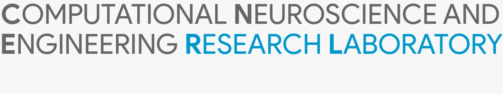

B.M.S Institute of Technology and Management
A220, Department of Electronics and Communication Engineering
BMS Institute of Technology & Management
Bangalore, Karnataka - 560119, India
Overview
The Computational Neuroscience and Engineering Research Laboratory (CNERLab) at BMSIT focuses on developing advanced signal processing, machine/deep learning solutions for brain-computer interfaces (BCI), neural decoding, biomedical instrumentation, and physiological signal analysis. The lab engages in interdisciplinary research combining neuroscience, artificial intelligence, and embedded systems to address challenges in assistive technologies, healthcare, and cognitive systems.
Research Themes
1. Brain-Computer Interfaces (BCI)
- Motor Imagery BCI with Online Adaptation: Development of adaptive BCI systems using motor imagery and error-related potentials (ErrPs) for robust real-time interaction.
- Feature Extraction & Classification: Techniques include SpecCSP, SVMs, deep networks, and reinforcement learning for error-driven classifier adaptation.
- Hardware Development: Portable EEG headsets and embedded systems to improve accessibility and usability of BCI applications.
2. Seizure Detection and Prediction
- CNN/LSTM/Transformer Models: Applied to 2D image representations of EEG data for seizure classification.
- Rare Event Prediction: Long-term EEG context modeling using attention-based architectures for identifying pre-seizure states.
- Open Datasets and Tools: Curated large-scale EEG datasets and image generation pipelines for public use.
3. Brain-to-Text Communication
- Neural Decoding Algorithms: Real-time, low-latency decoding of speech-related neural signals into text using transformer-based models.
- Generative Language Integration: Error correction using ErrPs and fine-tuned GPT models to enhance sentence fluency.
- Custom BCI Hardware: Development of EEG-based text generation systems using minimal electrodes and embedded AI modules.
Facilities
- EEG Acquisition Systems: OpenBCI R&D Bundle, Mitsar 32 Channel EEG System
- High-Performance Computing: Dell and HP Workstations with NVIDIA GPUs, NVIDIA DGX A100 (Remote Access)
- Embedded Development Tools: Jetson Xavier NX, Arduino, Raspberry Pi kits, ESD SMD workbench, Analog Discovery Studio
Collaborations
We actively collaborate with: Temple University, USA; University of New Mexico, USA; Pathpartner Technologies; ITIE Knowledge Solutions
Contact
CNERLab@BMSIT
A220, Department of Electronics and Communication Engineering
BMS Institute of Technology & Management
Avalahalli, Yelahanka, Bangalore, Karnataka - 560119, India